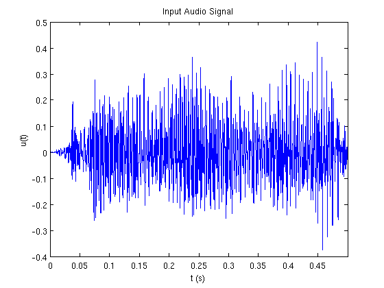
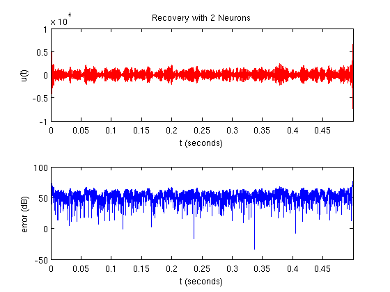
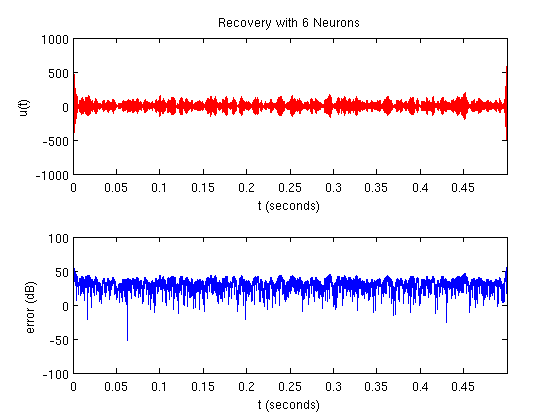
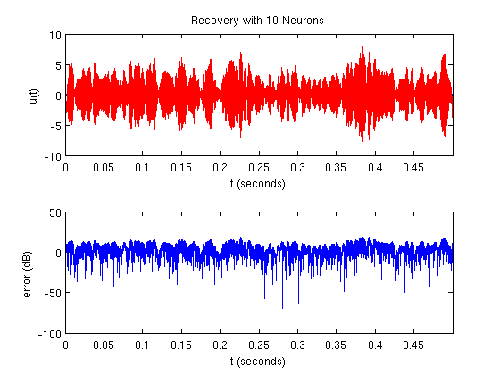
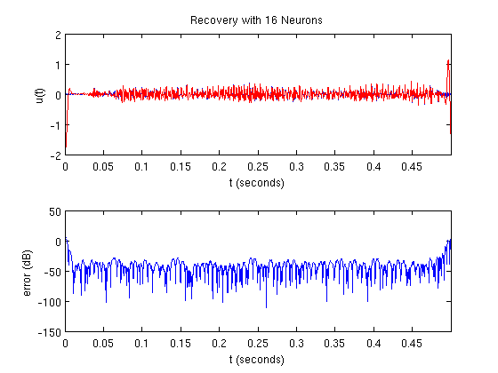

Time Encoding and Decoding of an Audio Sinal Using Gammatone Flters and the Trigonometric Polynomial Approximation:
Load and display about 0.5 s of the input audio signal:
Omega = 2*pi*1500; [u,fs] = wavread('sound.wav'); u = u(1:4000)'; dt = 1/fs; dur = length(u)*dt; M = ceil(dur*Omega/(2*pi)); t = [0:dt:dur-dt]; figure(); plot(t,u); xlim([min(t), max(t)]); title('Input Audio Signal'); xlabel('t (s)'); ylabel('u(t)');
Upsample the audio signal:
ratio = 500;
dt_interp = dt/ratio;
fs_interp = fs*ratio;
t_interp = [0:dt_interp:dur-dt_interp];
u_interp = interp1(t,u,t_interp,'spline');
Generate the filter bank:
N = 16;
h = make_gammatone_fb(t_interp,N); % size(h) == [N, length(t)]
Filter the input signal with the filter bank:
v = zeros(size(h)); for n=1:N, v(n,:) = filter_trig_poly(u_interp,h(n,:)); end
Encode the filtered signal:
b = 3+0.1*rand(1,N);
d = 0.001*ones(1,N);
s = {};
for n=1:N,
s{end+1} = iaf_encode(v(n,:),dt_interp,b(n),d(n));
end
Decode the filtered signal with different numbers of neurons. To save time decoding, the encoded signal is recovered at a coarse time resolution and then upsampled to 48 kHz:
fs_out = 48000; dt_out = 1/fs_out; t_out = [0:dt_out:dur-dt_out]; n_neurons = [2, 6, 10, 16]; for n=n_neurons, u_rec = iaf_decode_filt_trig_pop(s(1:n),dur,dt,Omega,M,b(1:n),d(1:n),h); % Plot the recovered signal: figure(); plot_compare(t,u,u_rec,sprintf('Recovery with %i Neurons',n)); % Resample the normalized recovered signal to 48 kHz and save it as an audio file: u_out = interp1(t,u_rec,t_out,'spline'); u_out = u_out/max(abs(u_out)); % Hack to prevent warning about clipping values too close to % +1.0: u_out(u_out > 0.999984) = 0.999984; wavwrite(u_out,fs_out,sprintf('sound_%i.wav',n)); end   
Author: Lev Givon
Copyright 2009-2015 Lev Givon